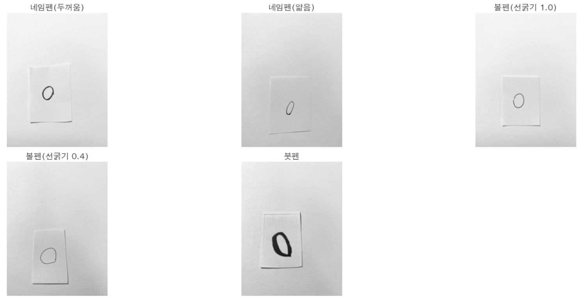

데일리 리포트 작성 자동화 (@BAT)
리포트 수기 작성 프로세스를 Python으로 전환. 팀원들의 반복 업무 시간을 90% 이상 줄였습니다.
영업기획 · 데이터 분석가 · 디지털 마케터로 만 6년.
그 동안 숫자로 비즈니스에 기여해 왔지만, 그 경험들의 상당 부분이 AI 한 번의 '딸깍'으로 대체될 수 있겠다는 위기감이 분명해졌습니다.
두려웠고, 멈추는 대신 움직이기로 했습니다. 이 페이지는 그 움직임의 기록입니다.
3년 전, 저는 스스로를 "데이터 분석을 기반으로 한 비즈니스 개발에 관심이 많은 사람"이라고 소개했습니다. Python, 머신러닝 모델링, 디지털 광고 운영 — 그 시절 이것들은 분명한 제 경쟁력이었습니다.
하지만 지금은 다릅니다. 모델링은 알고리즘 이해 없이도 '딸깍' 몇 번이면 가능해졌고, 해외 광고 매체는 진작에 머신러닝이 운영한 지 오래입니다. 3년 전엔 특권이었던 제 역량들이, 지금은 AI를 잘 다루는 초년생보다 못할 수도 있게 되었다는 사실을 인정해야 합니다.
그러나 이러한 위기와 동시에, 예전엔 불가능하다고 생각했던 것들이 손에 잡히기도 합니다. 앱 개발, 데이터 엔지니어링 — 예전의 저라면 혼자는 엄두도 못 냈을 영역들을 AI와 함께 만들기 시작했습니다.
위기와 기회가 동시에 있는 이 지점에서, 저는 조만간 날아오를 준비를 하는 로켓 앞에 서 있다고 느낍니다. 채널톡이 만들고 있는 건 단순한 챗봇이 아니라, 규칙·지식·태스크를 결합한 AI에이전트로 고객 문제 해결을 자동화하는 플랫폼이라고 읽었습니다. 최근 발간하신 〈2026 AI 고객 상담 성공 사례 리포트〉를 보며 그 변화의 방향성을 다시 확인했고, 이 로켓의 궤도가 제가 가고 싶은 방향과 정확히 맞닿아 있다고 느꼈습니다. 그래서 지원합니다.
6개 회사, 5가지 직무를 거치며 이커머스·소비재·핀테크 도메인에서 데이터로 비즈니스에 기여해 왔습니다. 이 궤적이 AX 컨설턴트로서의 완벽한 전제 조건이라고 주장하지 않습니다. 다만 "데이터를 비즈니스 성장으로 어떻게 연결시키는지"는 직접, 여러 번 실무에서 다뤄봤다고 말하고 싶습니다.
화려하지 않을지도 모릅니다. 하지만 이게 제가 현장에서 기여했던 경험들입니다.
자동화하고 개인화하는 과정에서, "기술로 어디의 병목을 해결했을 때 현장에서 반응하는지"를 몸으로 배웠습니다.
리포트 수기 작성 프로세스를 Python으로 전환. 팀원들의 반복 업무 시간을 90% 이상 줄였습니다.
수백 개 광고 중 이슈 발생 상품만 자동으로 탐지하여 광고 OFF까지 연결. 낭비 예산을 원천 차단.
유저 웹로그 기반 개인별 상품 추천 모델 직접 개발. 무분별한 단일 메시지에서 개인화된 LMS로 CRM 개선 제안.
반복 작업을 자동화 스크립트로 전환. 반복 작업 병목을 없애니 아이디어에 쓸 시간이 생긴다는 걸 스스로 증명한 사례.
5년 전만 해도 AI 학습은 어려웠고, 해봤다는 경험만으로도 차별점이 되었습니다.
그러나 이제 AI 모델들은 빠르게 발전하고, 링크드인에는 AI 선구자들의 글이 쏟아집니다. 솔직히 저는 그들을 100% 따라가지 못하고 있고, 아직 모르는 것이 훨씬 많습니다.
그러나 가만히 앉아서 위축되는 대신, 직접 해보는 쪽을 택했습니다. 아래는 그 움직임의 결과물들입니다.
크고 완성도 높은 성과는 아닐 수 있습니다. 그러나 이는 제가 이 변화에 진심이라는, 그래서 움직이고 있다는 증거입니다.
A4를 64등분한 종이에 5종류 펜으로 OX 이미지 총 320장 직접 제작. 이진화 threshold, dilate/erode 커널, ROI crop까지 3번의 iteration으로 성능을 28%p 끌어올린 경험. 모델 자체보다 문제 정의 및 전처리가 더 중요할 수 있다는 걸 몸으로 배웠던 프로젝트.

"자율주행에 필요한 기능을 직접 구현해보고 싶다"는 호기심 하나로 YOLO 아키텍처를 공부하고 구현했던 프로젝트. 모델이 실제로 기능하는 순간 느꼈던 "AI로 이런 것까지 가능하구나"라는 충격은 아직까지도 생생합니다.
에어코리아 API로 정보를 받아오는 미세먼지 알림 앱.
AI로 기획 → 개발 → 배포까지 혼자 가능하다는 걸 직접 확인했던 프로젝트. 지역 설정, 알림 시간 커스터마이즈, 7일 추이 시각화까지 — "AI가 개인의 역량 범위를 송두리째 바꿀 수 있다는 가능성을 직접 확인했습니다"


데이터 파이프라인을 Claude Code와의 대화로 구현·검증·디벨롭하는 경험은 신선한 충격이었습니다.
앞으로 이것이 모든 일의 기본 방식이 될 것이라는 확신이 들었습니다. — 이 지원서 페이지조차 Claude Code로 만들고 있습니다.

매시간 수집, 매일 새벽 적재·검증되는 네이버 쇼핑 데이터 파이프라인
— Cloud Functions, BigQuery, dbt, Airflow를 Claude Code와 대화로 구성했습니다.
아직 되지 못한 상태에서, 되고 싶은 방향을 적습니다.
다만 이것들은 막연한 소망이 아니라, 지금까지의 경험과 지금 하고 있는 움직임 위에 있습니다.
기술은 무섭도록 빨라졌지만, 문제를 정의하고 본질을 보는 안목은 아직 인간의 몫이 남아 있다고 믿습니다. 6년간 비즈니스 문제를 해결해온 제 경험과 지금의 AI가 결합될 때 어떤 가능성이 열릴지, 직접 마주해보고 싶습니다.
여전히 누군가에게는 AI란 낯선 무언가, 단순한 번역기에 불과합니다. 이러한 분들께 "AI로 이렇게까지도 되는구나"를 깨닫게 할 수 있는 사람이 되고 싶습니다. ALF가 누적 1,400+ 고객사에서 평균 44.9%, 잘 세팅된 곳에서는 80%+의 해결률을 만들어내고 있다고 들었습니다. 그 숫자를 더 많은 고객사로 확장하는 데 기여하고 싶습니다.
일본·미국으로 뻗어가는 채널톡의 글로벌 진출. 비즈니스 영어로 소통 가능한 AX팀원으로 그 여정에 참여하고 싶습니다.
빠르게 배워서,
빠르게 고객의 성장에 기여하겠습니다.
당장은 성에 차지 않으실 수 있습니다. 하지만 누구보다 빠르게 따라잡아 기여할 준비가 되어 있습니다.